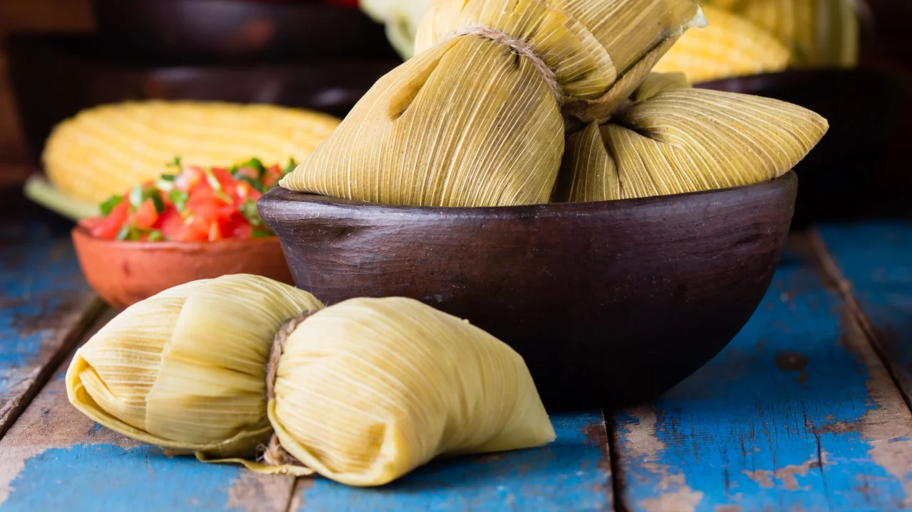

Gastronomía de Salta
Sabores tradicionales del norte argentino que deleitan los sentidos.

Empanadas Salteñas
Famosas por su masa fina y relleno jugoso de carne cortada a cuchillo, papa, huevo y ají.

Locro
Guiso tradicional a base de maíz, zapallo y carne, ideal para los días patrios o festivos.

Tamales y Humitas
Envueltos en chala de maíz, rellenos de sabores ancestrales del norte argentino.